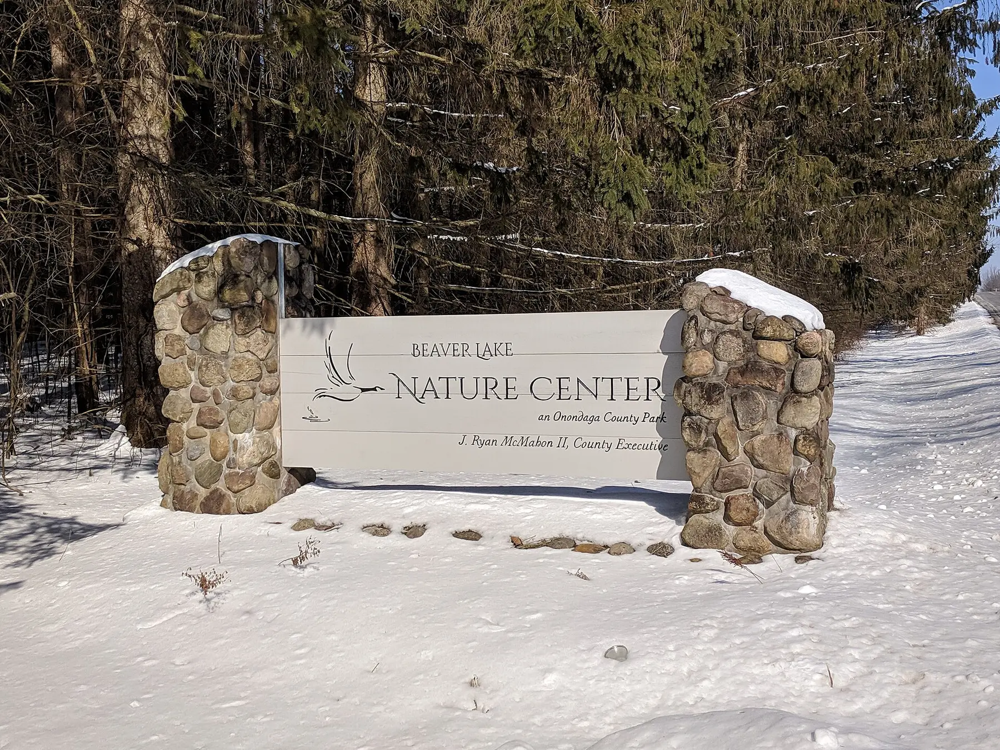
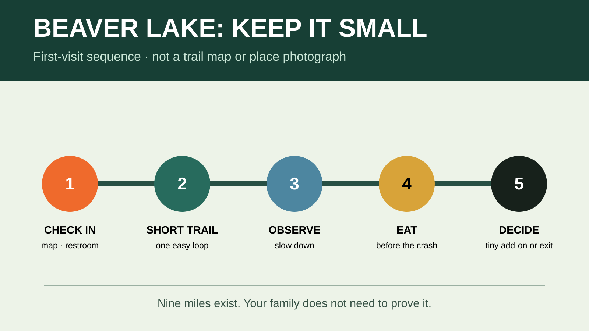

BALDWINSVILLE · EASY FAMILY NATURE DAY
Beaver Lake Nature Center With Kids: The Two-Hour Day That Does Not Need More
Pick one short trail, let the visitor center do some of the teaching, eat before everyone gets weird, and leave the giant loop for another day.

Who this day fits—and who should skip it
Good fit: families with school-age kids who can walk an easy natural-surface trail, slow down for wildlife and accept that the point is observation rather than rides or constant entertainment. Skip or simplify: anyone bringing a pet, a child who cannot reliably stay on the trail, a family that needs guaranteed stroller access without calling first, or a group that will be disappointed unless seasonal boat rentals are operating.
The preserve is designed for nature study. That changes the rules: no chasing wildlife, collecting, fishing or turning a quiet boardwalk into a racecourse. If the kids need a run-first playground day, use Green Lakes instead.
Current facts to verify before leaving
- Address: 8477 East Mud Lake Road, Baldwinsville, NY 13027.
- Drive: roughly 25–40 minutes from much of the Syracuse area, depending on your start and traffic. That is a planning estimate; check navigation.
- Scale: Onondaga County describes a 690-acre preserve with a 200-acre glacial lake and nine miles of trails through wetlands, meadow and forest.
- Difficulty: the county says most trails are easy and intended for nature observation.
- Admission: the current county events system commonly lists regular admission at $5 per vehicle. Treat that as volatile and verify before departure, especially during festivals.
- Hours: trails generally open early and close near dusk; closing time changes seasonally. Call 315-638-2519 or check the official page rather than trusting an old search result.
- Pets: pets are not permitted; service-animal rules are separate. Do not discover this after loading the dog.
- Seasonal activities: paddling, snowshoeing and skiing depend on season, conditions, hours, rentals and program availability. The ordinary walking plan does not depend on them.
The first-visit itinerary

9:00 a.m. — Visitor center first
Use the restroom, look at current trail notices and give the kids a job: find one bird, one wetland clue and one thing they cannot identify. Ask staff which short trail is driest and most appropriate for your group. This ten-minute stop prevents the classic mistake of choosing the longest route because its name sounded best online.
9:20 a.m. — Pick one short loop
For a first visit, choose a short, easy route from the posted map rather than automatically committing to the full Lake Loop. Trail conditions, boardwalk repairs and seasonal use can change. Photograph the current map, confirm the closing time and keep the group together. Walk at observation speed. A half-mile with three good discoveries beats three miles of complaining.
10:15 a.m. — Lake observation stop
Use a designated overlook or trail edge. Keep children on the walking surface and give wildlife space. Binoculars are useful, but one pair shared calmly is better than a bag of gadgets. If the trail is crowded, step aside only where the path safely allows it; do not move into habitat to create a private viewing spot.
10:40 a.m. — Snack or early picnic
Bring food instead of making the day depend on a concession. Eat only where the preserve permits, pack out trash and keep food controlled around wildlife. The family cooler guide explains when a small soft cooler beats dragging a hard box through the day.
11:15 a.m. — One decision, not five
If everyone is good, add a brief visitor-center pass or another very short trail. If attention is gone, leave. Do not turn “we drove here” into an obligation to use all nine miles. The ride home is part of the trip.
What to pack
- Water, simple food and a trash bag.
- Closed-toe walking shoes with useful tread; extra socks after wet weather.
- Weather layer, sun and insect protection, required medication and compact first aid.
- A charged phone with the official page and map saved, but not a promise of strong reception.
- Optional binoculars and a small notebook; skip speakers, toys that roll away and anything that encourages running on boardwalks.
Use the family hiking daypack guide to keep this load honest. If rain is possible, use the rain-gear decision guide; wet-weather gear does not make thunder safe.
Food, restrooms and accessibility
The visitor center is the logical restroom and information stop, but hours can differ from trail hours. Use facilities on arrival. Onondaga County states that it does not discriminate in the provision of services, and regional service listings describe the center as ADA compliant, but that does not prove every natural trail fits every chair or stroller today. Call ahead for the current accessible route, surface, restroom and parking details.
A stroller that works on pavement may be miserable on roots, wet chips or narrow boardwalk transitions. If staff cannot verify the route you need, use the visitor center and shortest confirmed accessible segment rather than testing access with a tired child aboard.
Weather and safety
Check the forecast before leaving and look at the sky again in the parking lot. If thunder is audible, an open shelter, tree canopy or rain jacket is not protection. Move to a substantial building or enclosed hard-topped vehicle and wait at least 30 minutes after the last thunder, following National Weather Service guidance.
After heavy rain, roots, mud and boardwalks can be slick. Stay on open trails, respect barriers and do not approach wildlife for a better picture. If a child becomes cold, unusually quiet, clumsy or unable to follow directions, end the trail rather than negotiating another loop.
Seasonal versions without rebuilding the whole day
Fall: arrive early, expect event-day admission and crowds to differ, and check the calendar. Winter: trail designations change for skiing and snowshoeing; verify conditions and rental hours. Summer: paddling is a separate activity with its own operating schedule and rules. Migration seasons: observation may improve, but wildlife never owes the kids a performance.
Meltdown and bad-weather backups
If the trail plan falls apart, use the visitor center briefly, eat, and go home. A second option is a preselected indoor stop closer to Syracuse; do not invent one while everyone is hungry. The family day-trip system treats the itinerary as disposable and the family’s energy as the thing to protect.
Official check-before-you-go sources
Operational details were checked August 25, 2026 and can change. Verify hours, admission, closures, rentals, programs and access on the day of travel.
- Onondaga County Parks: Beaver Lake Nature Center
- Onondaga County Parks: current contact information
- National Weather Service: outdoor lightning safety
Keep the weekend moving
Use the family day-trip system, hiking daypack guide and cooler guide to make the plan survive contact with actual children.